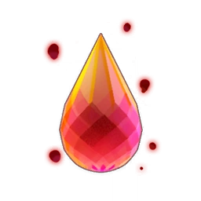

Jessica Thomas, J.T. (2020). Genshin Impact [Official Art]. The Gamer. https://www.thegamer.com/genshin-impact-everything-you-need-to-know-about-the-city-reputation-system/
The first region the traveller goes to is Mondstadt. Mondstadt is the land of freedom, ruled by the Anemo Archon, Barbatos, who is now referred to as Venti the Bard. This region has the blessings of the wind. From the architecture to the characters who reside in Mondstadt, the developers of the game, Hoyoverse, created Mondstadt based on Germany’s finest beauties. While being home to Teyvat’s largest wine industry, Mondstadt also remains the safest place to travel.
 While walking, the traveller and Paimon come across a Statue of Seven, which gives the traveller the ability to control anemo (wind-possessing abilities). The pair come across a dragon and a bard in the woods. The bard flees upon hearing them. However, they find a red tear-shaped crystal next to the spot the bard fled, which purifies itself upon closer inspection by the traveller. Upon nearing the gate of Mondstadt’s main city, the traveller encounters Amber, a Favonius Knight. She gives the traveller a wind glider as a welcome gift, which grants the user the ability to glide in the wind and takes the traveller to the main city of Mondstadt.
While on a test drive with the wind glider, the traveller sees a dragon, dubbed by the locals "Stormterror," causing a windstorm and taking the traveller into the air once more. The traveller battles the dragon while, unbeknownst to the traveller, is assisted by the mysterious bard they saw earlier that day. After succeeding in the battle, the Acting Grandmaster of the Favonius Knights, Jean, the Cavalry Captain of the Favonious Knights, Kaeya, and the Knight’s Librarian, Lisa, tell the traveller about Dvalin, the true name of the dragon they fought. Jean sends them out to destroy the four wind crystals, which are the cause of the windstorm in the city. The crystals are guarded by the Abyss Order, a mysterious organization that seems to be behind Dvalin's attempt to destroy the city.
The traveller’s sibling is later confirmed to be a part of the Abyss Order, in which they are the leader. After destroying the four wind crystals as instructed, the traveller returns to Jean and is given the title of Honorary Knight in return for the traveller’s help. Thankful for Jean’s gratitude, the traveller ventures through the city of Mondstadt, where he sees the mysterious bard he saw in the forest. After catching up to the mysterious bard, he introduces himself as Venti. To Venti’s surprise, the traveller pulls out the newly purified tear-shaped crystal they’d taken earlier. Stunned by the traveller’s ability to purify, Venti realizes the traveller’s abilities can help Dvalin, the dragon. Venti reveals that the Abyss Order is taking advantage of Dvalin, who is suffering from degradation. Venti explains to the traveller that in order to save Dvalin from the control of the Abyss Order, they’ll need the help of a sacred lyre called the "Holy Lyre der Himmel," once used by Barbatos, the god of wind, which is currently stored in the city’s cathedral.
Venti and the traveller attempt to ask for the lyre from the head of the cathedral but are denied their absurd request as it is a very sacred item to the cathedral. Because of this, the traveller and Venti resort to stealing it at night, when the security is less heavy. They almost succeeded, but their soon-to-be victory was cut short by a Fatui Electro Cicin Mage taking the holy lyre seconds before the traveller and Venti could get a hold of it. This resulted in one of the guards on duty spotting them. In response to this, the traveller and Venti flee to Angel’s Share, one of the wineries in the city. They are greeted by a red-haired man named Diluc, who is suspicious of the traveller and Venti’s intentions at the winery, so he investigates. Diluc points the guards in the wrong direction when asked about the location of the traveller and Venti. After a short introduction between Diluc, the traveller, and Venti, Diluc agrees to help them save Dvalin with Jean's help, where they discover that the new location of the holy lyre is in a stronghold outside of the city’s premises.
After defeating the Fatui enemies guarding the holy lyre, the Fatui warn the traveller and their friends to get their higher-up, Signora, involved. The traveller and their new friends acquire the now slightly damaged holy lyre but use the purified tear-shaped crystal the traveller had to restore the lyre. The group travels to the highest mountain in the region of Mondstadt to summon Dvalin and heal him, but is interrupted by an Abyss Mage who ends up breaking the holy lyre once more.
Feeling devastated, Venti reveals his true identity to the group as Barbados, the archon of their region that needs help to save Dvalin because of his weakened abilities caused by his prolonged absence. Using the deteriorating connection between Venti and Dvalin, Venti discovers that Dvalin is residing in the ancient ruins protected by a barrier. Upon arrival, Venti dispels the barrier and explains how they need to battle Dvalin to weaken him so they can use the traveller’s ability of purification to purify Dvalin from the curse bestowed upon him. Succeeding in their attempt to save Dvalin, Venti frees Dvalin from his duties of protecting Mondstadt in order to focus on recovery.
Going back to the city, the traveller goes with Venti to the Favonius Church to return the lyre. After giving it back in a slightly more damaged state, they head out. However, they are greeted with a gust of harsh winds as they are ambushed by the Fatui. The leader of the assassins is Signora, rank number 8 of the Harbingers. She reveals that Venti is actually the anemo archon and that they have come for his Gnosis, the archon’s connection to Celestia. Because Venti is too weak to fight them off in his current state, he gets his gnosis taken away from him, and the Fatui flee. After the incident, the traveller bids farewell to Venti, the knights, and their friends as they leave Mondstadt and journey to Liyue, another nation, to look for their sibling as suggested by Venti.
Long before the Archon War, Mondstadt was ruled by Decarabian. He created the city of Mondstadt (the soon-to-be capital of the nation). Because of a snowstorm caused by Andrius, the King of the North Wind, Decarabian builds a pillar of wind surrounding his land. A few thousand years later, Andrius declares war on Decarabian. Decarabian’s people begin to view his rule as tyrannical and rebel. Caught amidst the war is a nameless bard leading the charge. He befriends a wind spirit by the name of Barbatos. After dying in battle, Barbatos takes over the bard's body and continues to lead the rebellion. Soon, they manage to defeat Decarabian, and Barbatos restores the land and allows it to flourish once more. Barbatos goes into a deep slumber afterward.
A few hundred years later, Ursa, the dragon begins to terrorize the nation. Along with it came the rise of the Lawrence clan, a family that became the main rulers of Mondstadt and transformed it into an aristocracy. However, they became corrupt over time and abused their power. Most clans in Mondstadt also began to follow the Lawrence clan, with the exception of the Gunnhildr Clan, which maintained its honour.
A girl named Vennessa was born into a nomadic tribe exiled from their homeland for unknown reasons. After trying to flee to Mondstadt because of the danger posed by Ursa the Dragon, they are captured by the aristocracy. Due to her physical prowess, she was made into a gladiator. Due to this injustice, Barbatos returned to Mondstadt under the alias "Venti." He worked with Vennessa to overthrow the aristocracy and restore the city to its former glory. During Vennessa’s final duel, she was forced to face off against Ursa the Dragon. With Barbatos’s help, Vennessa manages to prevail. Most of the aristocrats are exiled. After this, Vennessa is chosen by the gods and ascends to Celestia. Venti leaves Mondstadt as a result.
Return to top